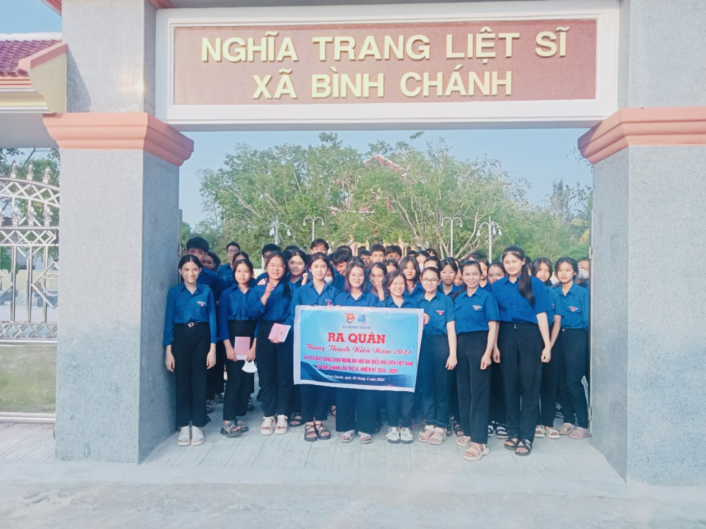
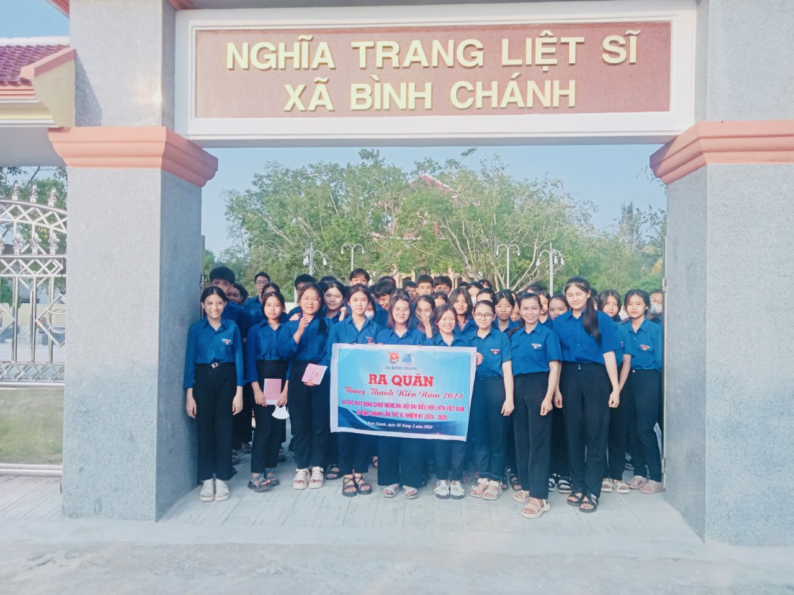
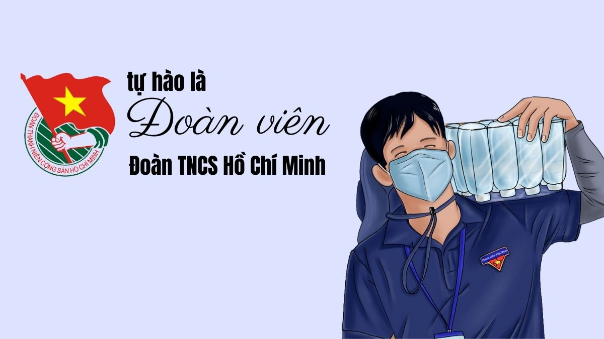
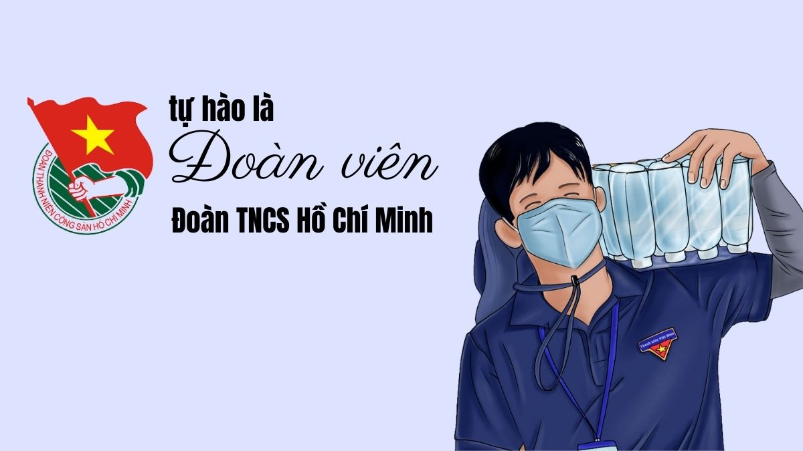

Ý nghĩa ngày 26/3
Ngày 26/3/1931 là ngày thành lập Đoàn Thanh niên Cộng sản Hồ Chí Minh. Đây là tổ chức chính trị - xã hội của thanh niên Việt Nam, do Đảng và Chủ tịch Hồ Chí Minh sáng lập và rèn luyện.
Ngày 26/3 hằng năm là dịp để đoàn viên, thanh niên ôn lại truyền thống, phát huy tinh thần xung kích, sáng tạo và trách nhiệm với xã hội.
Truyền thống vẻ vang của Đoàn
Qua nhiều giai đoạn lịch sử, các thế hệ thanh niên Việt Nam luôn là lực lượng đi đầu trong học tập, lao động và bảo vệ Tổ quốc.
 

Hoạt động tiêu biểu tại trường
- Hội thi văn nghệ chào mừng 26/3
- Phong trào thi đua học tập tốt
- Hoạt động tình nguyện vì cộng đồng
- Hội thao, bóng đá, bóng chuyền
- Sinh hoạt chi đoàn, kết nạp đoàn viên mới
 

Khoảnh khắc tuổi trẻ
Những hoạt động tập thể giúp học sinh rèn luyện kỹ năng sống, tinh thần đoàn kết và xây dựng những kỷ niệm đẹp của tuổi học trò.


Video giới thiệu về Đoàn
Thông điệp tuổi trẻ
Tuổi trẻ là quãng thời gian đẹp nhất của mỗi người. Hãy sống có lý tưởng, học tập chăm chỉ, rèn luyện đạo đức và không ngừng cống hiến cho xã hội.
"Đâu cần thanh niên có, đâu khó có thanh niên"